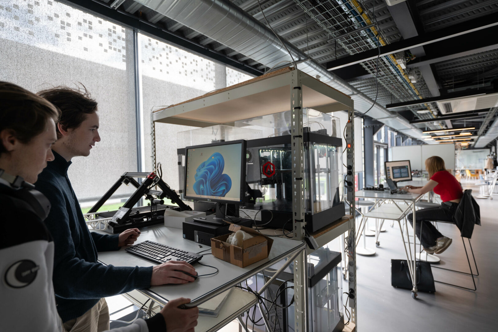
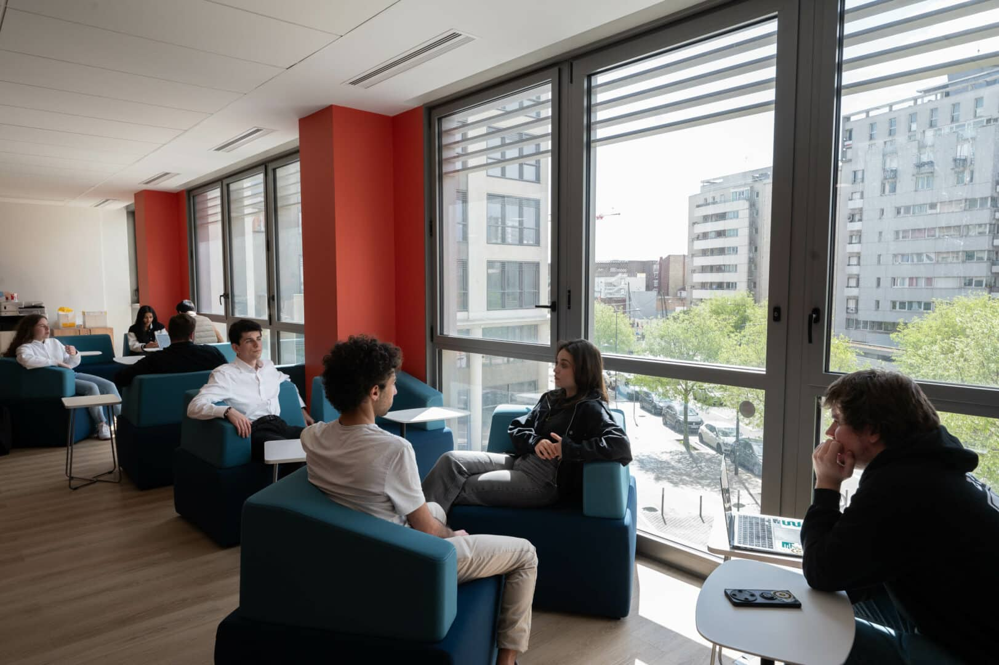
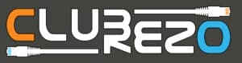
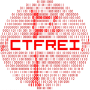
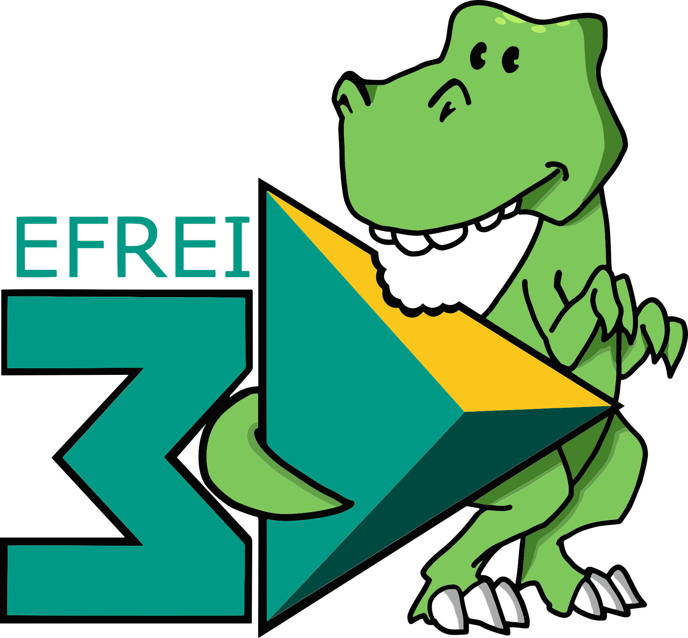
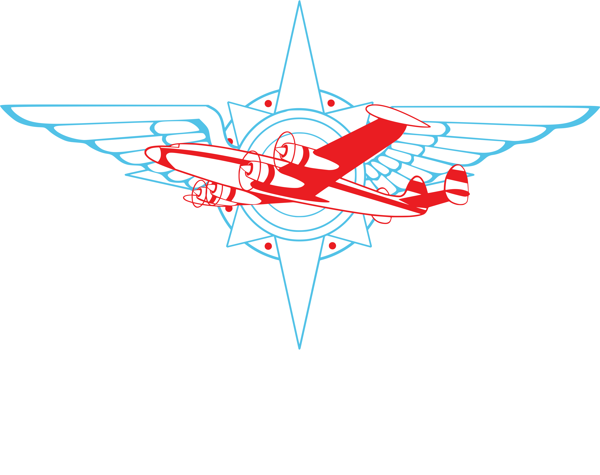
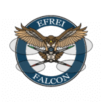
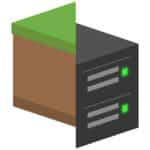
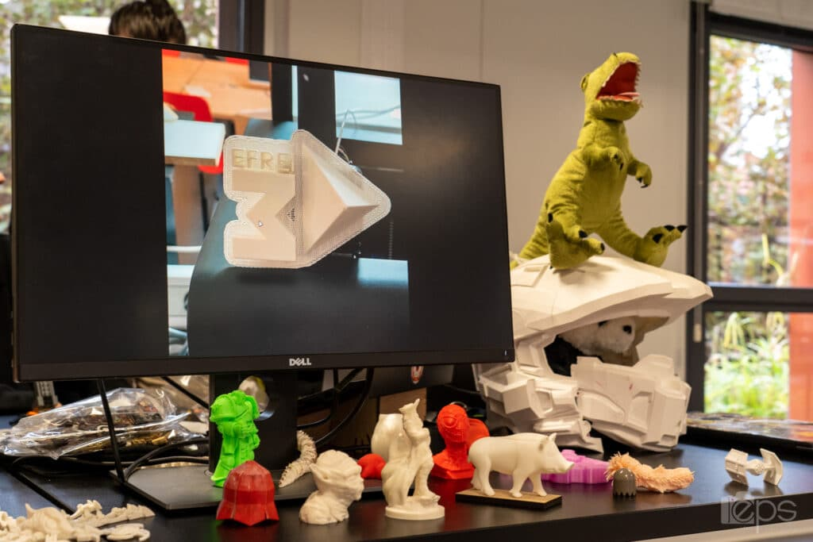

L'Innovation Lab de l'Efrei est un écosystème complet dédié à la création, à l'expérimentation et au partage des savoirs. Il regroupe deux espaces complémentaires : les FabLabs et le studio Audiovisuel & Réalité Virtuelle, chacun pensé pour répondre aux besoins des étudiants qui collaborent au quotidien.
Au cœur de l'Innovation Lab se trouvent des machines à commandes numériques: imprimantes 3D, découpeuses laser, ainsi qu'un large panel d'équipements techniques mis à disposition de l'ensemble de la communauté étudiante. L'accès à ces ressources mutualisées permet à chacun, quel que soit son niveau ou sa filière, de concrétiser ses idées et de passer du concept au prototype.


Les campus de l'Efrei ont été pensés pour aller bien au-delà de la salle de cours traditionnelle. Disséminées à travers les bâtiments de Villejuif, de nombreuses zones de coworking sont accessibles à tous les étudiants, à tout moment de la journée, pour répondre à un besoin simple mais fondamental : pouvoir travailler ensemble, dans de bonnes conditions.
Les zones de coworking ne sont pas séparées de la vie pédagogique. Elles en font partie intégrante. C'est souvent là que naissent les meilleures idées, que se forment les équipes de hackathon, que se finalisent les projets de fin d'année.
Au-delà du travail, ces espaces jouent un rôle social dans la vie du campus. Ils permettent aux étudiants de différentes filières et promotions de se croiser, d'échanger et de collaborer sur des projets communs. Cette mixité est l'une des grandes forces de l'Efrei : elle prépare les étudiants à la réalité du monde professionnel, où la capacité à travailler en équipe dans des environnements ouverts est devenue indispensable.
L'école abrite une constellation de clubs et d'associations étudiantes entièrement dédiés aux métiers et aux passions du numérique. Ces structures, animées par les étudiants eux-mêmes, constituent un terrain d'expérimentation unique où la théorie rencontre la pratique dans un cadre libre, stimulant et bienveillant.








À l'Efrei, les projets sont le reflet d'une pédagogie tournée vers la pratique, l'innovation et la créativité. Qu'ils soient réalisés dans le cadre des cours, des associations ou d'initiatives personnelles, ces projets témoignent du niveau et de l'ambition des étudiants.

Un projet européen dédié au suivi des oiseaux
Un GPS pour déficients visuels avec assistant IA intégré
Une carte qui permet de suivre en direct le taux de pollution dans une agglomeration